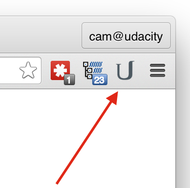

How Udacity Feedback Works
- Install from the Chrome Web Store ← if you just want to write or run tests
- Install from source code ← if you want to help improve Udacity Feedback
Udacity Feedback gives you the ability to write HTML, CSS and JavaScript
For security reasons, you can only run JS tests against pages that you own.
The tests run against the live DOM and display their pass/fail status in a widget on the page.
You can turn off feedback at any time. In fact, the widget waits for permission before turning on. To turn it on, click on the Udacity logo
and click the checkbox next to "Allow feedback on this domain."
You should see a test widget appear with two tests. If not, try reloading the page.
Loading Tests
There are two main methods for load tests against a website. Take a look at the first two tests under Meta Tag:
Load from <meta>
These two tests are inspecting a meta tag in the head of this document. To automatically run tests against a page that you control, just add this tag to the head:
<meta name="udacity-grader" content="relative_path_to_tests.json">
Any tests from the JSON file referenced by the content tag will start running immediately after the page loads. This is how you should load tests against websites that you control. Of course, if you don't control a website, you can't add a meta tag. For that, there's the second method: loading from JSON. Here's a JSON file with some more tests.
Download me!Load from JSON
Now that you've downloaded the tests, click on the extension again, click 'Load Files' and choose the file that you just downloaded. You should see a lot more tests appear. This is how you load tests against websites that you don't own.
Great! So now you have a lot more tests. Here's how they work.
Tests
Test 1 - CSS
rgb(204, 204, 255)!Use DevTools to change the background to the color value shown. You should see the test get checked off when you do. Here's how the test was written:
description: "Test 1 has correct bg color",
"definition": {
"nodes": ".test1",
"cssProperty": "backgroundColor",
"equals": "rgb(204, 204, 255)"
}
This test checks the background color of every element of returned by the selector .test1. Unless you specify otherwise, all of the elements must pass the test. In this test, you got feedback on background color, but you can write tests against any CSS property.
Some things to note:
- Use camelCase for the CSS property you want to test.
- Only rgb colors are supported (at the moment) - make sure they've got spaces after the commas.
Test 2 - innerHTML
Here's how the test was written:
"description": "Test 2 says 'Hello, world!'",
"definition": {
"nodes": ".test2",
"get": "innerHTML",
"hasSubstring": "^Hello, world!$"
}
Whoa! Look at that! Regex. Some things to note:
- There's a
getproperty. Use this to 'get' properties that would otherwise not be classified under CSS styles, attributes, or absolute position. The biggest use cases are innerHTML and count. hasSubstringwill run a match against a string. If any match groups are returned, the test passes.
Ok, enough with the easy tests.
Test 3 - Layout with Width
There are a few ways to write this test. This is how I did it:
"description": "Test 3 has larger columns",
"definition": {
"nodes": ".test3.colored",
"cssProperty": "width",
"isGreaterThan": 159
}
You may need to resize your browser to a width greater than 640px to pass the test.
Really, what I'm checking here is that one of the columns has been deleted. They're in a flexbox and none of them could be larger than 159px if all three exist. I just wanted to show off that you've got range properties to take advantage of. Here, I used isGreaterThan, but isLessThan and isInRange are also available.
There are a few ways to write the same test. Here's another:
Test 4 - Layout with Count
"description": "Test 4 has two columns",
"definition": {
"nodes": ".test4",
"get": "count",
"equals": 2
}
This time, I used the count property to find the number of elements returned from the .test4 selector. When it meets the requirements set by equals, the test passes!
Test 5 - JavaScript
testEvent();Here's how I wrote this test:
"description": "Test 5 has been called",
"definition": {
"waitForEvent": "ud-test",
"exists": true
},
"flags": {
"noRepeat": true
}
If you want to test something tricky, perhaps with JavaScript, you can take advantage of the waitForEvent property. In this case, the test is waiting for the window to dispatch an event called ud-test. As soon as it receives the event, the test passes!
Of course, if you're running JavaScript, you'll need to control the website and add an extra attribute to the meta tag.
<meta name="udacity-grader" content="tests.json" libraries="jsgrader" unit-tests="unit_tests.js">
This example takes advantage of two new attributes: libraries and unit-tests. Udacity Feedback comes with a JavaScript library for testing,jsgrader, which is what I use for lots of tests on the Udacity site. The file unit_tests.js is just some JavaScript that gets injected into the page. Of course, you can use whatever testing logic you'd like with your unit-tests so long as you communicate when a test passes by dispatching a custom event from the window. This is what my custom event looked like:
window.dispatchEvent(new CustomEvent('ud-test', {'detail': 'passed'}));
Conclusion
Those are the basics of Udacity Feedback. Now go out there and write some quizzes!
© Cameron Pittman, Udacity 2015